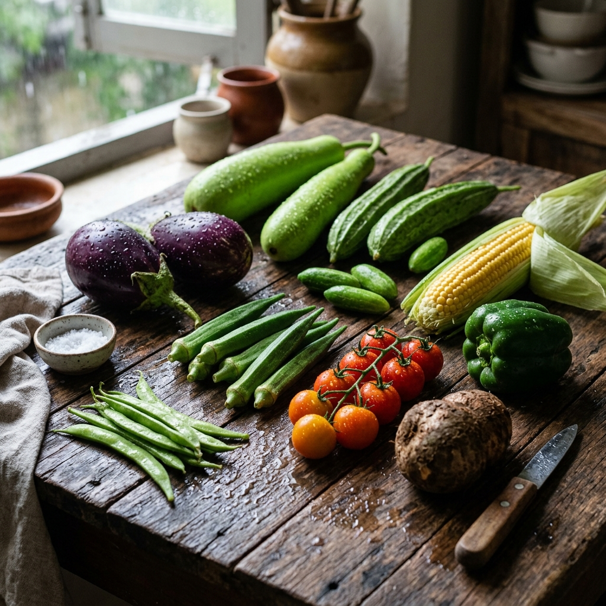

Monsoon is nature's gift to the vegetable kingdom. As the rains nourish the earth, a spectacular array of nutrition-dense vegetables come into season — vegetables that have evolved alongside the rainy season and are perfectly suited to keep your body strong when it's most vulnerable.
Why Eat Seasonal Monsoon Vegetables?
Seasonal vegetables are harvested at peak ripeness, contain maximum nutrients, are naturally lower in cost, and are available at their freshest. During monsoon, the body's digestive system slightly weakens — exactly when nature provides lighter, easier-to-digest vegetables to compensate.
The Top 10 Monsoon Vegetables
1. Bitter Gourd (Karela)
Often avoided for its bitterness, karela is a monsoon powerhouse. It's rich in iron, magnesium, potassium, and vitamins A and C. Studies show bitter gourd has anti-diabetic properties and helps regulate blood sugar — critical when sweet monsoon cravings are strong.
How to eat it: Stuffed and pan-fried, in dal, or as a juice with ginger and lemon.
2. Bottle Gourd (Lauki)
Light, easy to digest, and extremely hydrating — bottle gourd is exactly what your body needs during rainy season. With 96% water content and generous fibre, it keeps digestion smooth and prevents the bloating many experience in monsoon.
3. Drumstick (Moringa)
Moringa pods are among the most nutritionally dense foods on earth. They contain 4x the calcium of milk, 7x the Vitamin C of oranges, and a complete amino acid profile. Monsoon is their natural harvest season in South India.
Quick Monsoon Immunity Shot
Ready in 5 minutes. Serves 2.
- 2 tbsp fresh turmeric juice
- 1 tsp ginger paste
- 1 tbsp moringa powder
- Juice of 1 lemon
- 1 tsp raw honey
- 150ml warm water
Method: Blend all ingredients, strain if desired, drink immediately on an empty stomach.
4. Ridge Gourd (Turai)
Turai is rich in dietary fibre and has proven anti-inflammatory properties. It's particularly good for liver detox — important during monsoon when waterborne infections peak and your liver works overtime.
5. Onions
Fresh monsoon onions are exceptionally high in quercetin, a powerful anti-allergy and anti-inflammatory flavonoid. They're a natural antibiotic and have been used in traditional medicine across India for centuries during monsoon months.
6. Fenugreek (Methi) Leaves
Fresh methi floods the markets during monsoon and for good reason. It's rich in iron, folic acid, and soluble fibre. Methi is particularly recommended for diabetics and those with digestive issues — both common monsoon complaints.
7. Amaranth Leaves (Lal Saag)
This crimson-coloured leafy green is a protein powerhouse. With 15g of protein per 100g and generous iron and calcium, amaranth was the superfood of ancient civilizations — and it deserves its revival in your kitchen.
8. Cluster Beans (Guar)
High in soluble fibre and an excellent source of dietary proteins, cluster beans have impressive blood-sugar-lowering properties. They're also rich in iron and vitamin K, both often depleted during monsoon waterborne illnesses.
9. Raw Turmeric
Fresh (raw) turmeric root, harvested in monsoon, is 5x more potent than the dried powder. Curcumin — its active compound — is the most researched natural anti-inflammatory compound known. Grate it raw into rice, dal, or golden milk.
10. Colocasia (Arbi)
These taro root corms are monsoon-specific and incredibly nutritious. High in resistant starch that feeds beneficial gut bacteria, arbi supports the gut immunity that's most under threat during wet season.
Where to Get Them Fresh
All 10 of these vegetables are available daily on FreshMarket, sourced from certified organic farms within a 300km radius. They're harvested at sunrise and on your plate by evening — maximum nutrition guaranteed.
Amazing article! I had no idea bitter gourd was this good for blood sugar. Will definitely be ordering some this week from FreshMarket.